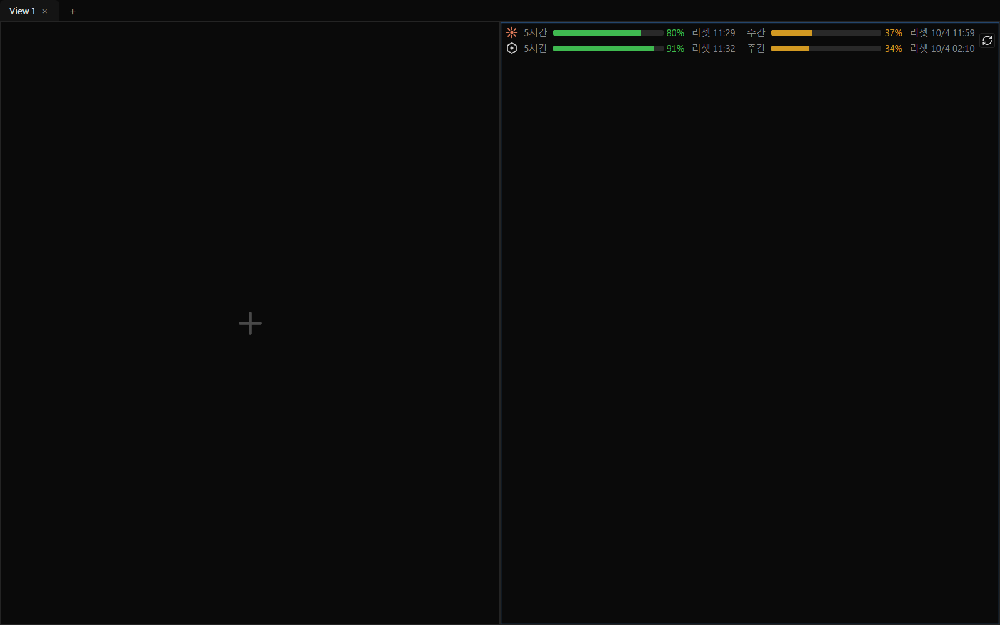
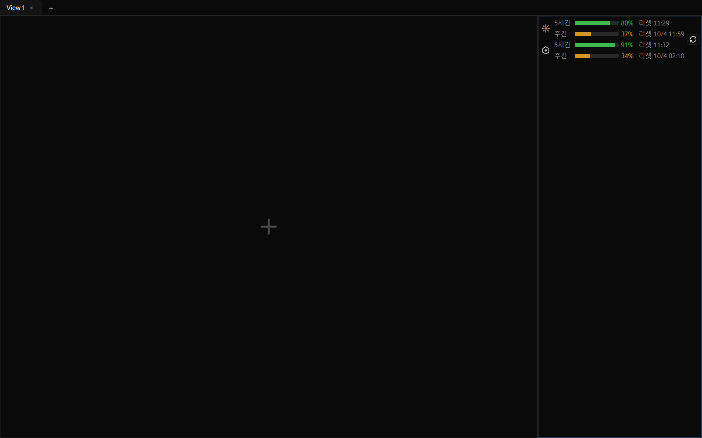
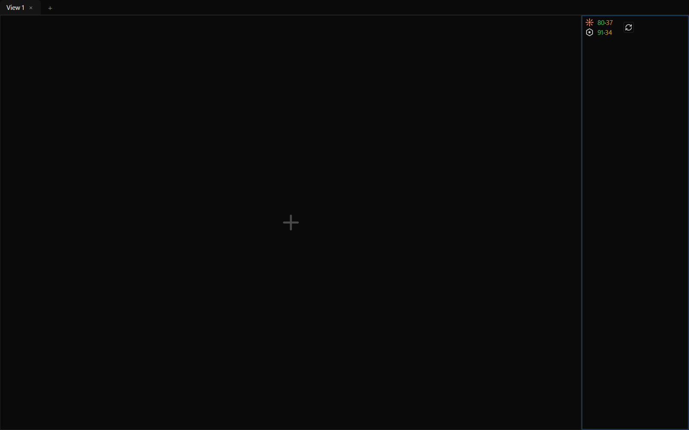
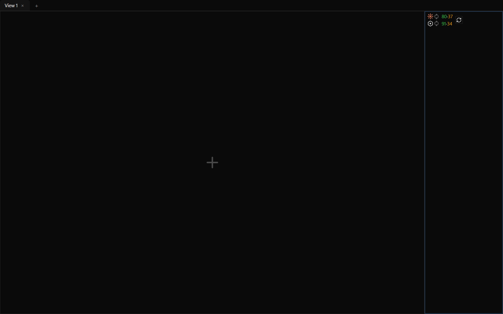
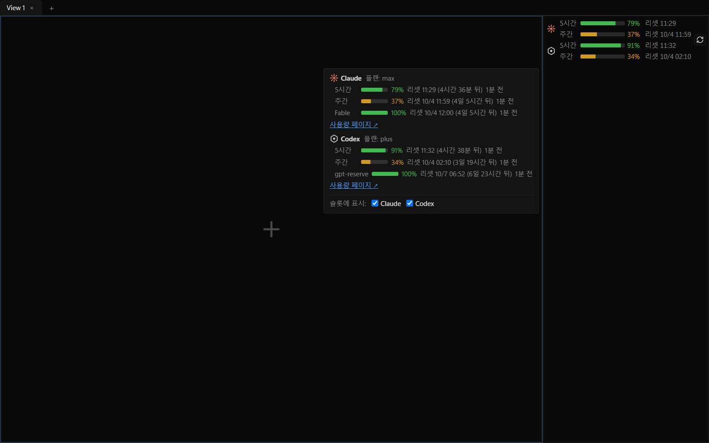
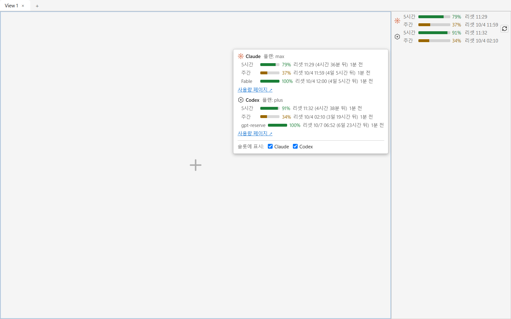
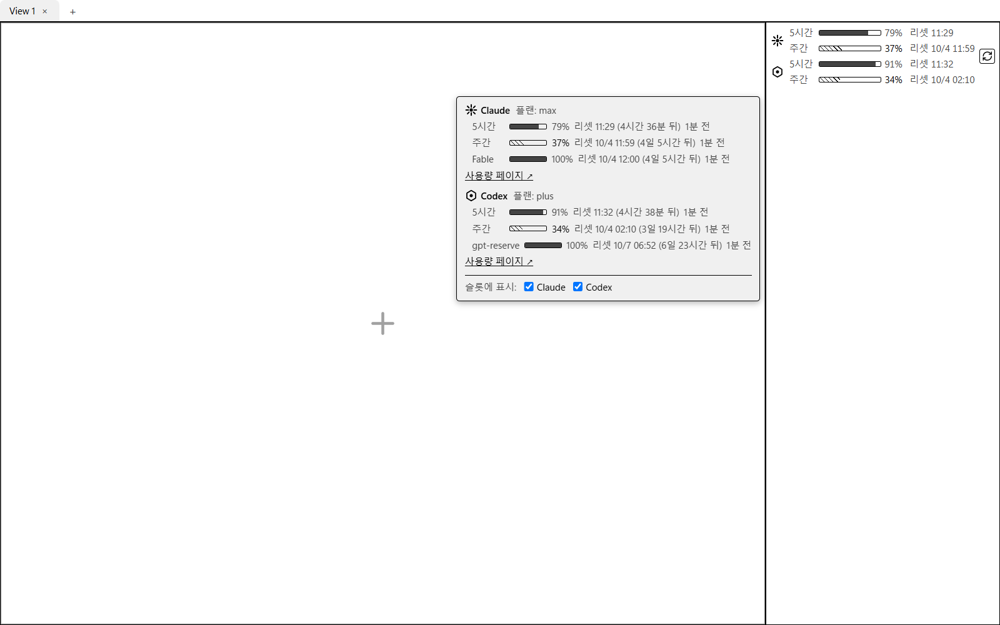
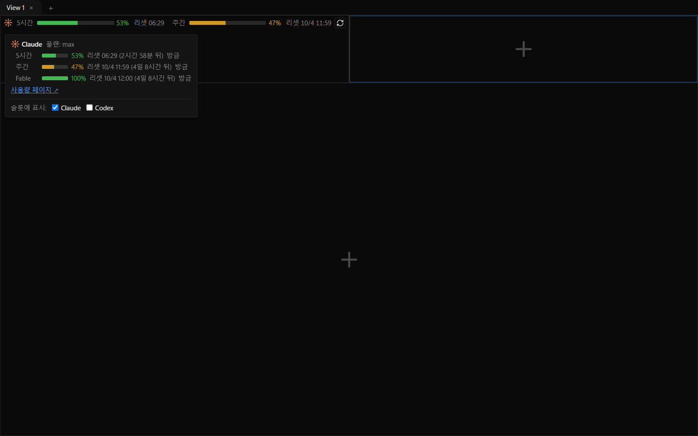
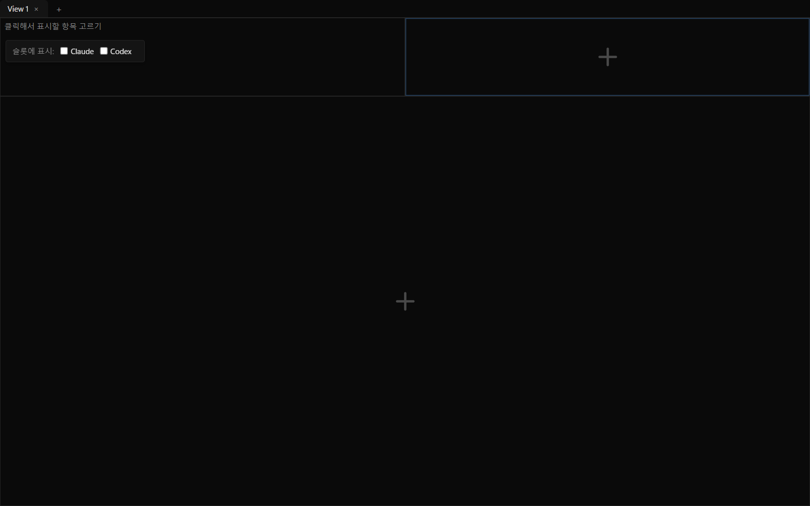
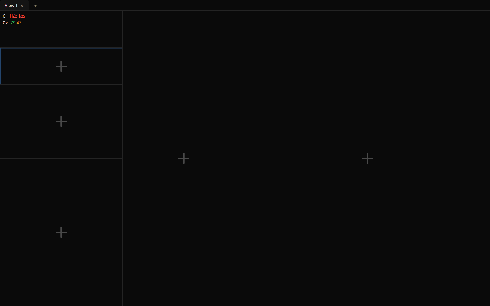

화면부터 보고, 확인이 필요한 곳만 짚어 주세요.
v0.3.2/feat/usage-limit-slot · 최신 커밋 5a12bfc(문서) — 마지막 코드 커밋 d88dfee(⟳ 자리) · 결정 기록 문서 37b6c9e
실제로 이렇게 보입니다(2026-09-30 캡처). 회사 아이콘(위 Claude · 아래 Codex) 옆에 5시간·주간 막대, 남은 %, 리셋 시각. Claude 5시간 80%·주간 37%, Codex 5시간 91%·주간 34% — 초록은 절반 넘게 남음, 주황은 절반 이하. 오른쪽 ⟳ 하나가 두 회사를 함께 새로 고칩니다.
전에 여기 있던 「수정안 미리보기」는 그대로 구현했고, 그 뒤 ⟳ 자리까지 정해 반영했습니다(2026-09-29·30 사용자 결정). 아래는 지금 화면 캡처입니다 — 왼쪽부터 넓은 순.
1단계 (넓을 때) — 회사마다 한 줄에 5시간·주간. 두 회사 줄의 칸(창 이름·막대·%·리셋)이 세로로 맞습니다. 막대가 남는 폭을 채우므로 ⟳ 는 내용 끝, 곧 슬롯 오른쪽에 붙습니다.

2단계 (중간) — 창마다 한 줄. 회사 아이콘이 그 회사의 두 줄에 걸칩니다. ⟳ 는 역시 내용 바로 옆입니다.

3단계 (좁을 때) — 아이콘 + 남은 % 숫자만(5시간·주간). ⟳ 는 숫자 바로 옆에 붙고 슬롯의 나머지는 비워 둡니다. 숫자 뒤에 약 14px 여유를 남겨 둡니다.

3단계 — 새로 고치는 중 — 아이콘 옆에 도는 표식이 생겨 숫자가 밀리지만, 그 약 14px 여유를 쓰므로 ⟳ 는 움직이지 않습니다(왼쪽 그림과 같은 자리).
작은 표시 아무 곳이나 클릭하면 열립니다. 켠 회사마다 상세를 전부 보이고, 맨 아래 한 줄에서 회사별로 켜고 끕니다. 팝업엔 ⟳ 가 없습니다 — 새로고침은 작은 표시의 ⟳ 하나입니다.

다크 테마 — 오른쪽 위가 누른 작은 표시, 가운데가 팝업입니다. 슬롯 가장자리에서 열어도 잘리지 않게 슬롯 밖으로 뜹니다(여기선 왼쪽으로).

라이트 테마 — 같은 내용, 배경만 밝게.

e-ink 테마 — 색 대신 채움 모양으로 가릅니다(주황 구간 = 빗금).
! 배지에 마우스를 올렸을 때와 같은 문장입니다.
Codex 를 끈 모습 — 상세엔 켠 Claude 만 남고, 끈 Codex 는 체크 줄에만 있습니다(다시 켤 자리).

둘 다 끈 모습 — 작은 표시엔 「클릭해서 표시할 항목 고르기」 한 줄(⟳ 없음), 누르면 체크 줄만 있는 팝업.
usageSlot.refresh · usageSlot.toggleClaude · usageSlot.toggleCodex)으로 부릅니다.← 그림은 옆으로 밀어서 봅니다.
usage.get 을 부르면 데몬이 즉시(필요하면 조회해서) 답합니다.슬롯이 놓인 칸이 좁아질수록 정보를 줄여서 보여줍니다. 세 단계의 지금 모습은 위 「작은 표시」 절, 팝업은 「팝업」 절에 있습니다 — 여기엔 높이 규칙·테마·트레이 동작을 둡니다.

높이가 모자라도 3단계 — 2단계가 들어갈 너비여도 칸 높이가 모자라면(2단계는 네 줄이라 키가 큽니다) 3단계로 갑니다. 어느 크기에서도 ! 배지가 잘리지 않게 하려는 것입니다.설계서 이탈개편 전(2026-09-29) 캡처라 회사 약자 Cl·Cx 와 ⚠ 가 보입니다 — 둘 다 지금은 없고, 높이 규칙만 그대로입니다.
라이트 테마 — 색(초록 / 주황 / 빨강) 그대로, 배경만 밝게.
e-ink 테마 — 색 대신 채움 모양으로 가릅니다. 주황 구간은 빗금, 빨강 구간은 검정 채움 + 굵은 테두리(이 캡처엔 빨강 구간이 없습니다).
예전 이 자리의 「팝업(회사마다 ⟳)」·「우클릭 메뉴(사용량 새로고침 · 회사별 표시 체크)」 캡처는 뺐습니다 — 2026-09-29 사용자 결정으로 팝업의 ⟳ 와 메뉴의 사용량 항목이 모두 없어졌습니다.
← 그림은 옆으로 밀어서 봅니다.
기획 문서(PRD·TRD)가 세부까지 정하지 않은 부분은 구현하면서 메인이 하나를 골라야 했습니다. 각 항목의 실제 문구·동작과 그렇게 고른 이유입니다. 설계서 이탈 표시는 PRD·TRD 에 적힌 것과 다르게 구현된 항목입니다.
set_usage_slot). 전체 교체를 버린 이유 = 두 체크를 빠르게 연달아 누르거나 LLM 이 동시에 쓰면 서로를 덮어서입니다(ADR-0258 · TRD §3 #102 ⑤). 반영 전에 같은 체크를 다시 누르면 두 번째 누름은 사실상 무시됩니다(현행 유지 — 사용자 결정 2026-09-30). → 「팝업」! 배지가 잘리지 않게)는 그대로입니다.checked)와 활성 조건 함수(enabled(ctx))를 더했습니다 — ADR-0252.Command.when)을 넓혀 쓰려 했지만, 그러면 사용자에게 값이 새는 경로가 생긴다는 리뷰 지적을 받아 되돌리고 이 방식으로 바꿨습니다.그 밖에 아직 사용자 확인이 남은 것
CLAUDE.md 에 박힌 테스트 수치(워크스페이스 결과 줄·통과 수 등) 최신화| 단계 | 리뷰 강도·판정 | 비고 |
|---|---|---|
| 4단계 — 데몬 사용량 서비스 | ||
| 병합·서비스 본체·조회 구동·스케줄러(4d) | deep · PASS | 커밋 128ad56 |
| 5단계 — wire·조립·LLM 명령 | ||
| wire + 조립 + 연결 계층(5a) | FIX → 반영 | 7aad8f7 → 4fd426a |
| 버스 usage.get·usage.refresh(5b) | FIX → 반영 · 이견 1건 남음 | 56776d6 → c68b885 (항목 10) |
| 6단계 — 셸 구독 | ||
| 슬롯 콘텐츠·링크 권한·관심 계산(6a) | FIX → 반영 | 1ee3b29 → 547f83f |
| 연결 배선(6b1) | FIX → 반영 | 00e6683 → 0561249 |
| ⟳ 경로(6b2) | 시험 보강 | 31ca403 → c1eb031 |
| 관심 재계산 배선(6c) | codex FIX(트레이 표식 순서) → 반영 | 871bc8f → 6539832 |
| 7단계 — 화면 | ||
| 데이터 경로(7a) | doc-aware PASS · codex FIX(재연결 미당김) → 반영 | 088266e → 664d011 |
| 화면 렌더링(7b) | 양쪽 FIX → 반영 2라운드 | 846a3e4 → a7946c0, d49a93f |
| 메뉴·LLM 경로(7c) | 양쪽 FIX → 반영 2라운드 | b59a7ac → 626279c, 59bb49e |
| 최종 QA(로컬 · 8단계 착수 전, 2026-09-29) | ||
| 워크스페이스 전체 회귀 | PASS | 결과 줄 59 · 3617 통과 · 0 실패 · 28 무시 |
| 셸 단위(lib_unit) | PASS | 401건 |
| 프론트(vitest) | PASS | 1491건 |
| GUI 실측(1~7단계 시나리오) | PASS | 구독 따라감 · 트레이 숨김/복원 · 새로고침 뒤 재그림 · 메뉴 · 팝업(그때의 화면 — 지금 모습은 아래 2026-09-30 행) |
| 실제 데몬 확인 | PASS | engram usage.get 으로 Claude·Codex 실 CLI 조회, 2~3초 내 응답 |
| 후속 개편(2026-09-29~30 · 사용자 결정) | ||
| 작은 화면 개편 — 아이콘·세로 정렬·⚠ 제거·리셋 시각 | tsc · vitest 1505 만 | 6598291 — 커밋 때 /review code·/qa full 은 안 돌림(뒤의 /qa full 두 번은 이 코드가 들어간 트리 전체를 돌았음) |
| ⟳·켜고 끄기 재배치 · 30초 간격 제거 · 리셋 표기 | code full 4회차 PASS | 910c214 — /qa full PASS(워크스페이스 3620 · lib_unit 401 · vitest 1528 · GUI 4항목) |
| ⟳ 를 모든 단계에서 내용 바로 옆으로 | code full 3회차 PASS | d88dfee — /qa full PASS(아래 2026-09-30 QA) |
최신 QA(로컬 · 2026-09-30 · d88dfee) | ||
| 워크스페이스 전체 회귀 | PASS | 3620 통과 |
| 프론트(vitest) | PASS | 1535건 |
| GUI 실측(8항목) | PASS | 단계별 ⟳ 간격 6 / 6 / 19.8px · 새로 고치는 중 ⟳ 이동 0 · 좁은 3단계 · 단계 경계 근처에서 새로 고쳐도 단계 불변 · 크기 바꾸며 훑어도 깜빡임 없음 · 팝업 + 표시 체크 · 보조기술 트리에 군더더기 없음. 스크린샷 = 이 문서의 「작은 표시」·「팝업」 절(qa4 캡처) |
★안 한 것★ — CI(아직 push 안 해 실행 자체가 없음) · 릴리즈 빌드에서 콘솔 창이 안 뜨는지 확인 · macOS·Linux(POSIX) 동작 · 비정상 상태(로그인 필요·설치 안 됨·거절됨 등) 실측 · 실제 트레이 아이콘 클릭 · 팝업의 「사용량 페이지 ↗」 링크 클릭.
브랜치엔 다른 작업(턴 도중 입력) 커밋도 섞여 있어, 사용량 슬롯과 무관한 것은 뺐습니다. 최신 순.